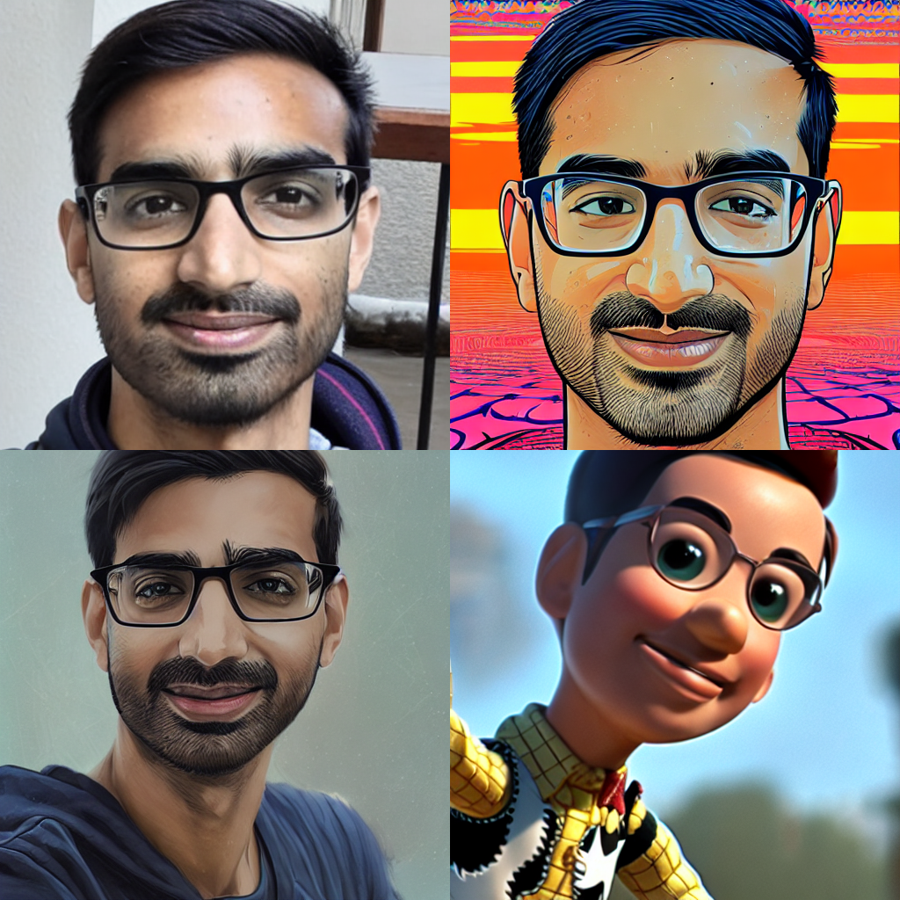

How to create your own AI avatar using HuggingFace Diffusers and Dreambooth
I’m super impressed with the quality of Dreambooth using HuggingFace Diffusers 🚀 — with only 14 images of myself! These four images are created by Stable Diffusion using the same fine-tuned model with different prompts:1

Here are a few details that made the difference for me:
High-quality data: As always, the most crucial element is data. I got away with very few images, but quality is important. I used:
- 14 images
- Captured around the same time, therefore same facial structure, hairstyle, etc
- Cropped to head & shoulders
- I was the only subject
Avoid overfitting: Second most important is to avoid overfitting. I used:
- Prior preservation loss with 90 high quality portraits scraped from Pexel via the
yuvalkirstain/portrait_dreamboothHuggingFace dataset - Low learning rate (1e-6)
- Low training step count (300) – adjust this based on how many images you have
- Prior preservation loss with 90 high quality portraits scraped from Pexel via the
Train the text encoder: In addition to the U-Net. I needed to use a few of the supported memory optimization features to run this on a 16GB GPU:
- Xformers’ efficient attention – had to build from source, prebuilt didn’t work
- HuggingFace Accelerate’s gradient accumulation
- Bitsandbytes’ 8bit adam
High-quality prompts: If you do all of the above perfectly, you still won’t get great results without high quality prompts. I’m not a prompt guru myself, so I took from the excellent prompts curated at PublicPrompts as well as Lexica.
Even with great prompts, it is a struggle to get it to deviate from the training set. I had to tweak the order of words, and try adding and removing certain words to get it to work. For some reason, adding “Hypnotic illustration” to the start of the prompt worked consistently 🤷🏽♂️.
Please don’t hestitate to share any questions or comments in the Twitter thread below or via email:
I'm super impressed with the quality of Dreambooth with @huggingface Diffusers 🚀 using only 14 pics of myself!
— Wasim Lorgat (@wasimlorgat) March 6, 2023
All of these are generated, with different prompts for: plain photo, psy art, anime, toy story
What worked for me:
1. As always, the most crucial element is data… pic.twitter.com/ueZd13AuwR
Footnotes
Here are the exact prompts I used for each of the above images:
- Top-left: a photo of <dreambooth token>
- Top-right: Hypnotic illustration of <dreambooth token>, hypnotic psychedelic art by Dan Mumford, pop surrealism, dark glow neon paint, mystical, Behance (PublicPrompts source)
- Bottom-left: Hypnotic illustration of <dreambooth token>, anime illustration by makoto shinkai, stanley artgerm lau, wlop, rossdraws, concept art, digital painting (PublicPrompts source)
- Bottom-right: Toy Story’s Woody as <dreambooth token>, 4k, artstation, cgsociety, award-winning, masterpiece, stunning, beautiful, glorious, powerful, fantasy art by Greg Rutkowski, octane render, unreal engine, high (Lexica source)